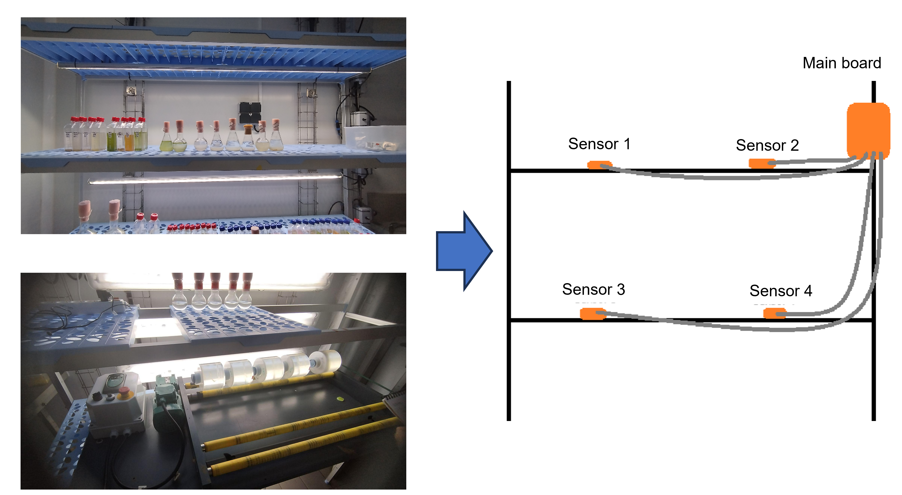

LemarConnect Alguos
Introduction et Objectifs du projet
LemarConnect Alguos est un projet conçu spécifiquement pour les laboratoires de l'IUEM, visant à surveiller la croissance des algues dans un climat contrôlé. Il permet aux chercheurs de mesurer à distance la température, la lumière et l'humidité dans deux environnements distincts, facilitant ainsi le suivi des conditions de culture. Le système collecte et transmet en temps réel les données, offrant une gestion automatisée via InfluxDB, Grafana et RocketChat. Conçu pour être modulaire, évolutif et économique, il garantit une surveillance fiable des algues tout en répondant aux contraintes d'autonomie et de résistance aux conditions environnementales.


Développement d'un réseau de communication

Dans le cadre du projet LemarConnect Alguos, j’ai participé au développement d’un réseau de communication basé sur le protocole LoRaWAN, afin d’assurer la transmission à longue portée et faible consommation des données environnementales (température, humidité, luminosité). Ce réseau permet aux capteurs déployés dans les bassins de culture d’envoyer les données vers un serveur central, via The Things Stack. Cette architecture assure une communication fiable et continue entre les modules de mesure et les outils d’analyse comme InfluxDB et Grafana.Nous avons également anticipé les besoins de maintenance en facilitant la reprogrammation des cartes électroniques et l'intégration de nouveaux capteurs IoT. Pour cela, une application desktop dédiée a été développée, permettant aux techniciens de configurer et mettre à jour les modules facilement, sans connaissances avancées en programmation.
Développement de différents prototypes prototype

Le système IoT repose sur une architecture modulaire : une carte principale (main board) gère l’alimentation, le traitement des données et la communication, tandis que chaque capteur (température, humidité, luminosité) est monté sur une carte dédiée pour faciliter l’entretien et l’adaptation à différents environnements. La carte principale est construite autour d’un microcontrôleur ESP32 et d’un modem LoRa SX1262, sélectionnés pour leur faible consommation et leur compatibilité avec les outils open source (Arduino IDE). Une antenne PIFA a été conçue et simulée pour assurer une bonne performance radio tout en réduisant les coûts. Ce choix technique garantit une intégration simple, évolutive et économique, tout en assurant une communication robuste avec l'infrastructure LoRaWAN déployée sur le terrain.